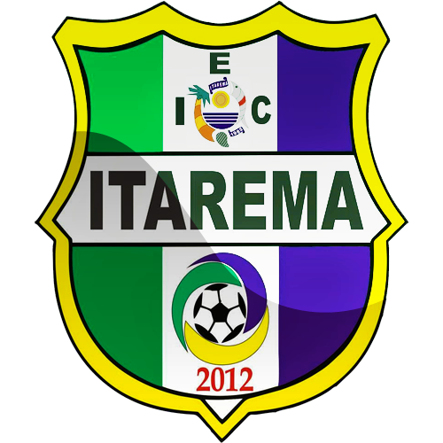

<mat-toolbar color="primary" class="sticky">
  <div fxHide.gt-xs>
    <button mat-icon-button (click)="onToggleSidenav()">
      <mat-icon>menu</mat-icon>
    </button>
  </div>
  <div id="logo">
    <a routerLink="/"
      ></a>
  </div>

  

  <div fxFlex fxLayout fxLayoutAlign="flex-end" fxHide.xs>
    <ul fxLayout fxLayoutGap="10px" class="navigation-items">
      <li>
        <a routerLink="/">
        <mat-icon>home</mat-icon>
        <span class="nav-caption">Início</span>
        </a>
      </li>
      <li>
       
        <a routerLink="/club">
        <mat-icon>sports_soccer</mat-icon>
        <span class="nav-caption">O Clube</span>
        </a>
      </li>
      <li>
        <a routerLink="/city">
        <mat-icon>location_city</mat-icon>
        <span class="nav-caption">A Cidade</span>
        </a>
      </li>
      <li>
        <a routerLink="/test">
        <mat-icon>videocam</mat-icon>
        <span class="nav-caption">Mídia</span>
        </a>
      </li>
      <li>
        <a routerLink="/contact">
        <mat-icon>email</mat-icon>
        <span class="nav-caption">Contato</span>
        </a>
      </li>

      <li class="torneio">
        <a routerLink="/tournament">
          <fa-icon [icon]="faTrophy"></fa-icon>
              <span class="nav-caption">Torneio de Futebol Juvenil</span>
        </a> 
      </li>
      
    </ul>
  </div>
</mat-toolbar>
